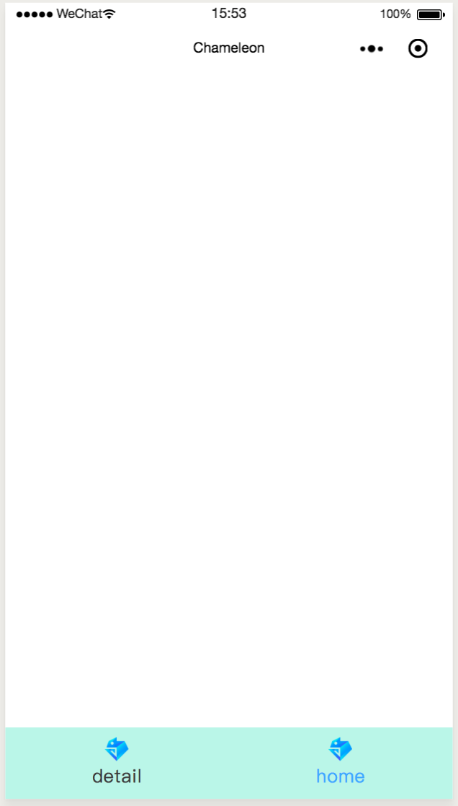
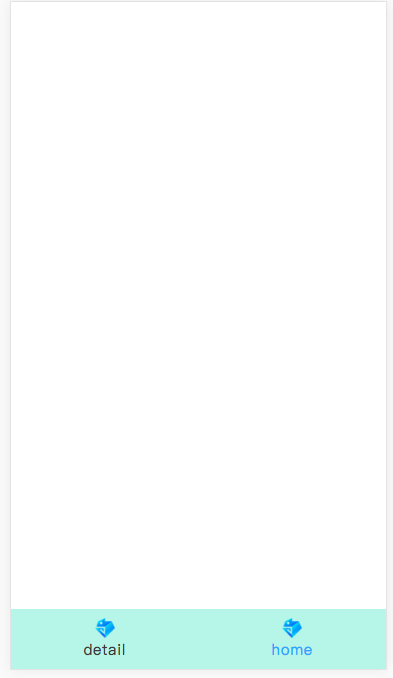

c-tabbar
tabbar组件
注意需要升级最新的cml-ui,在项目根目录执行npm i cml-ui@latest -S
属性
| 属性名 | 类型 | 必填 | 默认值 | 说明 |
|---|---|---|---|---|
| c-bind:onclick | EventHandle | 是 | tab被点击的时候会触发该事件，参数详情中`detail.compName`是tabbar.list配置中的compName | |
| c-model | String | 是 | 当 使用 component 动态组件的时候，更方便的和动态组件要渲染的组件名有个对应,具体使用方式参考下面案例中的 currentComp | |
| tabbar | Object | 是 | {} | 详情见下表 |
tabbar 详情
| 属性名 | 类型 | 必填 | 默认值 | 说明 |
|---|---|---|---|---|
| useFixedLayout | Boolean | 否 | false | 用于决定是否使用position:fixed 这种布局方式去布局tabbar组件 |
| position | String | 否 | 'bottom' | 仅在useFixedLayout 为true的时候生效 |
| tabbarStyle | String | 否 | '' | tabbar样式支持自定义 |
| tabLineStyle | String | 否 | 'background-color:#FC9153;height:2cpx;' | tabbar的下划线自定义样式，仅在 position 设置为top的时候有效 |
| textStyle | String | 否 | 'color:#000000' | tabbar文案默认的样式 |
| selectedTextStyle | String | 否 | 'color:#61c7fc' | tabbar文案被选中的时候的样式 |
| list | Array | 是 | [] | 配置tabbar的icon，文案等，详情见下表 |
list 中数组每一项的配置详情
| 属性名 | 类型 | 必填 | 默认值 | 说明 |
|---|---|---|---|---|
| text | String | 是 | '' | tab的文案 |
| icon | 网络图片地址或者`require(path/to/image)` | 否 | tab的icon | |
| selectedIcon | 网络图片地址或者`require(path/to/image)` | 否 | tab被选中时显示的icon | |
| iconStyle | String | 否 | 默认的icon的宽高是40cpx; | 设置icon的样式 |
| selectedIconStyle | String | 否 | 设置icon被选中的时候的样式 | |
| compName | String | 是 | 选择'usingComponents'中的组件进行对应，需要结合component动态组件进行渲染 |
示例
<template>
<view>
<view style="height:{{viewPortHeight}}cpx;background-color:#42f4f4" >
<component is="{{currentComp}}" ></component>
</view>
<c-tabbar
c-bind:onclick='handleTabbarClick'
c-model="{{currentComp}}"
tabbar="{{tabbar}}"
></c-tabbar>
</view>
</template>
<script>
import cml from "chameleon-api";
class Index {
data = {
viewPortHeight:0,
currentComp:'comp1',
tabbar:{
"tabbarStyle":"height:120cpx;background-color:#BAF6E8",//tabbar最外层的样式支持自定义
"tabLineStyle":"background-color:#069ADC;height:2cpx;",//自定义tabline的高度和背景色
"textStyle":"color:#3b3b3b", //文案默认style ,可以这里控制文案的大小，样式等
"selectedTextStyle":"color:#3baaff",//文案被选择style
// "position":"top", //tabbar的位置 top/bottom
"useFixedLayout":true, //是否通过fixed布局进行tabbar的布局
"list":[
{
"compName":"comp1",
"text": "detail",
"icon": require("../../assets/images/chameleon.png"),
},
{
"compName":"comp2",
"text": "home",
"icon": require("../../assets/images/chameleon.png"),
}
]
},
}
methods = {
handleTabbarClick(args){
console.log('tabbar-info',args)
}
}
created(res){
cml.getSystemInfo().then(info => {
//这里要减去tabbar的高度，默认是120cpx,如果tabbarStyle中设置了其他高度，则要减去对应的值；
this.viewPortHeight = Number(info.viewportHeight) - 120;
});
if(res.comp){ //这里可以在传递的query中获取到想要激活的组件,具体使用方式参见文末的demo链接
this.currentComp = res.comp;
}
}
}
export default new Index();
</script>
<style>
</style>
<script cml-type="json">
{
"base": {
"usingComponents": {
"c-tabbar":"cml-ui/components/c-tabbar/c-tabbar",
"comp1":"/components/demo-com/comp1",
"comp2":"/components/demo-com/comp2"
}
}
}
</script>

wx

web